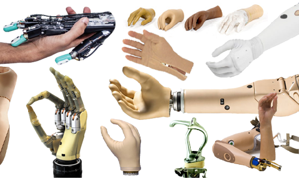

CLASIFICAREA PROTEZELOR

Criteriu 1.In functie de nivelul amputatiei
Criteriul 2. Criteriul functional
Criteriul 3. Criteriul estetic
- proteze cosmetice
- proteze cu comanda prin tractiune
- proteze cu comanda mioelectrica
- proteze hibride
Criterii de alegere a protezelor:
- fără proteză;
- proteze cosmetice;
- proteze cu acţiune corporală;
- proteze cu acţiune extracorporală (electrice);
- proteze hibride;
- proteze specifice anumitor activităţi